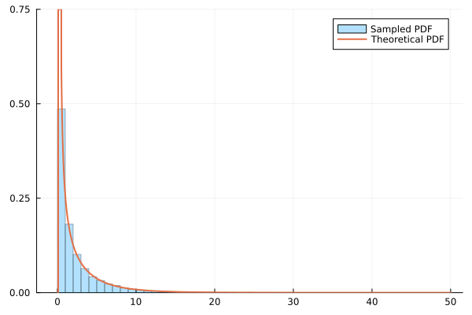
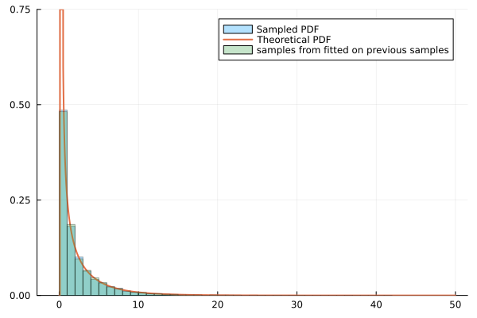

Example
using MyExtendedExtremes
using Distributions
using ExtendedExtremesParameters
a, b = 0.1, 0.5
p = 0.30.3Create the mixed distribution
d = MixedUniformTail(p, Uniform(a, b), ExtendedGeneralizedPareto( TBeta(0.4), GeneralizedPareto(0.0,3, 0.1)) , a, b)MixedUniformTail{Distributions.Uniform{Float64}, ExtendedExtremes.ExtendedGeneralizedPareto{ExtendedExtremes.TBeta{Float64}}}(
p: 0.3
uniform_part: Distributions.Uniform{Float64}(a=0.1, b=0.5)
tail_part: ExtendedExtremes.ExtendedGeneralizedPareto{ExtendedExtremes.TBeta{Float64}}(
V: ExtendedExtremes.TBeta{Float64}(α=0.4)
G: Distributions.GeneralizedPareto{Float64}(μ=0.0, σ=3.0, ξ=0.1)
)
a: 0.1
b: 0.5
)
use it like any Distributions.jl distribution
println(pdf(d, 0.2)) # PDF in uniform part
println(cdf(d, 0.2)) # CDF in uniform part
println(quantile(d, 0.8)) # Quantile in tail part0.75
0.075
3.518971760355587Random draws
using Plots
samples = rand(d, 10000)
histogram(samples, bins=50, normalize=true, label="Sampled PDF",alpha=0.3)
plot!(x -> pdf(d, x), 0, 50, label="Theoretical PDF", lw=2)
dd = fit_mix(MixedUniformTail,samples)
samples2 = rand(dd,10000)
histogram!(samples2 , bins=50,normalize=true,label="samples from fitted on previous samples",alpha=0.3)